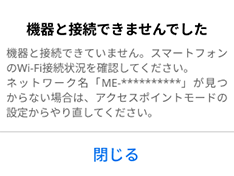

エアコンをアクセスポイントモード（APモード）にする
エアコンをアクセスポイントモード（APモード）に設定する
- 無線LANアダプターのUNITランプが5秒間に1回点滅していることを確認します。

ERR NET MODE UNIT 
消灯
消灯
消灯
5秒間隔で
1回点滅- この状態にならない場合は、エアコンの無線設定をリセットしてください。「エアコンの無線設定のリセット方法」をタップすると下のリセット方法を説明する画面が表示されますので、内容を確認して、エアコンの無線設定をリセットしてください。
- 無線LANアダプターの「MODE」ボタンをMODEランプが点灯状態になるまで（約7秒間）先の細いもので押して離します。

ERR NET MODE UNIT
消灯
消灯
点灯
消灯- 無線LANアダプターが再起動され、しばらくすると、MODEランプとUNITランプが点滅（5秒間隔で1回点滅）を開始します。
アクセスポイントモード（APモード）になったことを確認する
- 無線LANアダプターのMODEランプ（オレンジ）とUNITランプ（緑）が5秒間隔で1回点滅します。

ERR NET MODE UNIT
消灯
消灯
5秒間隔で
1回点滅
5秒間隔で
1回点滅- この状態は10分で終了します。10分以上経過した場合は「1」からやり直してください。
設定情報シールを確認する
設定情報シールの位置は、無線LAN アダプターの取扱説明書をご確認ください。
無線LAN アダプターを取り付けた際に施工業者またはお客さまが取扱説明書に記載した情報や、貼り付けた設定情報シールで確認してください。また、設定情報シールは無線LANアダプターにも貼り付けられています。確認する場合は、

注意
禁止
無線LANの設定を確認するときは、不安定な台に乗らない
- 転倒などケガの原因になることがあります。
エアコンとスマートフォンを接続する
- スマートフォンの「設定」の「Wi-Fi」で、エアコンのSSIDである「 ME-**********」（*の部分は10桁の英数字）のSSIDを選択します。
- リモコンにメニューボタンが無い機種では、パスワード入力は必要ありません。パスワード入力を求められた場合は、機種選択を誤っていますので、機種選択からやり直してください。
- iOS搭載のスマートフォンでは以下の画面が表示されます。「＜設定」をタップしてスマートフォンの「設定」画面に進み、「Wi-Fi」をタップして上の「Wi-Fi」画面に進んでください。


- MyMUアプリの画面に戻って「次へ」をタップする
- エアコンとスマートフォンが接続できていることを確認してから、「次へ」ボタンをタップしてください。

- 「
次へ」をタップすると位置情報の使用許可を求めるメッセージが表示されます。「1度だけ許可」「Appの使用中は許可」あるいは「アプリの使用時のみ」「今回のみ」をタップしてください。「許可しない」をタップすると接続に失敗します。


- 接続に失敗した場合は右のメッセージが表示されます。「閉じる」をタップしてメッセージを閉じ、スマートフォンの設定画面でエアコンとスマートフォンの接続をやり直してください。ME-**********」が見つからない場合はアクセスポイントモードの設定からやり直してください。 
- エアコンとスマートフォンが接続できていることを確認してから、「次へ」ボタンをタップしてください。
おしらせ
オートメーション機能で位置情報を使用する場合は、位置情報の許可を求める画面で「Appの使用中は許可」「アプリの使用時のみ」をタップし、「正確な位置情報」を「オン」にしてください。オートメーション機能については取扱説明書をご確認ください。
エアコンをWPSモードにする
エアコンをWPSモードにする
- 無線LANアダプターのUNITランプが5秒間に1回点滅していることを確認します。
ERR NET MODE UNIT
消灯
消灯
消灯
5秒間隔で
1回点滅- この状態にならない場合は、エアコンの無線設定をリセットしてください。「エアコンの無線設定のリセット方法」をタップすると下のリセット方法を説明する画面が表示されますので、内容を確認して、エアコンの無線設定をリセットしてください。
- 「MODE」ボタンを約7秒間押し続けると、APモード（下のランプ状態）に切替わってしまいます。この状態になった場合は、再度「MODE」ボタンを約7秒間押し続けて通常モードに戻してから、再度手順「2」を行ってください。
ERR NET MODE UNIT
消灯
消灯
5秒間隔で
1回点滅
5秒間隔で
1回点滅
接続モードになったことを確認する
- 無線LANアダプターのMODEランプ（オレンジ）が点滅します。

ERR NET MODE UNIT
消灯
消灯
点滅
消灯- この状態は10分で終了します。10分以上経過した場合は「1」からやり直してください。
ルーターをWPSモードにする
- エアコンをWPSモードにしてから2分以内に、ご使用のルーターの「WPS」ボタンを数秒間（ルーターにより異なります）押して、しばらく待ちます。
- 「WPS」の名称は「AOSS®」や「らくらく無線スタート」などの場合があります。詳しくはルーターの取扱説明書などを確認してください。
- 「 WPS」ボタンを押す時間は、ルーターの仕様により異なります。詳しくは各機器の取扱説明書をご確認ください。
- 2分以上経過すると、ルーターの「WPS」ボタンを押しても接続できなくなります。

エアコンとルーターの接続が完了したことを確認する
エアコンとルーターがWPS接続できたか確認する
- NETランプが5秒間点灯することを確認します。

ERR NET MODE UNIT
消灯
5秒間点灯
消灯
消灯- 接続完了です。サーバーとの初期通信が自動的に始まります。
- 接続に失敗するとERRランプが5秒間点灯します。
接続失敗時のランプ
| ERR | NET | MODE | UNIT |
|---|---|---|---|
5秒間点灯 |
消灯 |
消灯 |
消灯 |